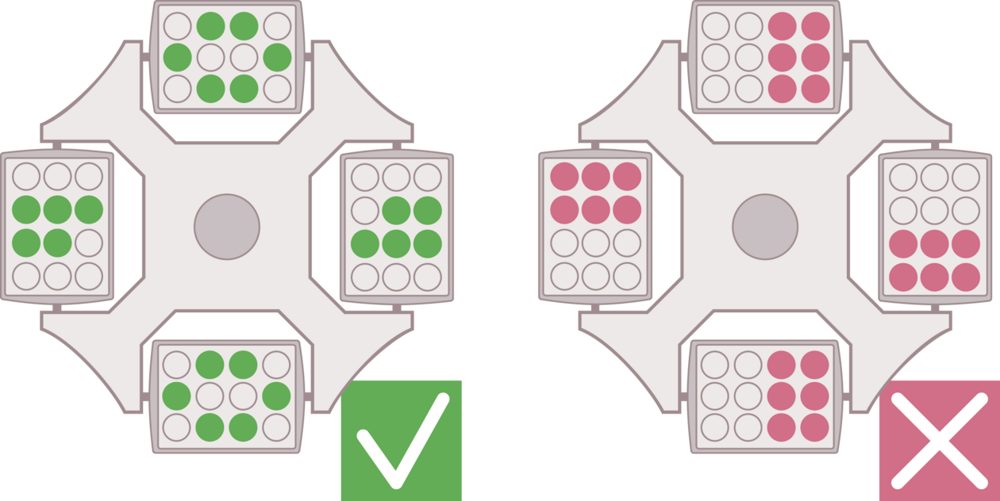

Dithionite Citrate Extraction
Last edited: 03NOV2023 NP
Materials
- Lab coat
- Safety glasses
- Gloves
- 4-digit analytical balance
- Kim wipes
- Measuring scoop or scoopula
- 0.75g air dried soil of each sample
- Mechanical reciprocating shaker
- Duct tape
- Centrifuge
- 50-mL centrifuge tubes (Falcon tubes)
- ICP tubes and caps or 15 mL centrifuge tubes with caps
- 0.4g measuring scoop (the PINCH scoop)
- 10mL pipette tips (equal to the # of samples)
- 1-10mL pipettor
- 47mm GF/A Whatman glass fiber filter paper
- Small glass funnels, equal to the number of samples
Procedure
- Weighing:If you don’t have one, make a weighing stand for the Falcon tube by cutting out a chunk of Styrofoam from the Falcon tube holders. Then, take the cap off of a Falcon tube, place the tube in the stand and TARE it on the scale. Gently mix the soil in the bag to make a homogenous sample. Weigh 0.75g (+/- 0.02) of <2-mm fine-grind, air-dry soil sample and record to the nearest mg (0.000).
Move to the fume hood
- In the fume hood, add 0.4g Sodium Dithionite to each Falcon tube using a level pinch scoop (pic).
- Pour some 0.57 M Sodium Citrate into a triple-rinsed beaker or flask.
- Use a 25 mL bulb pipette to add 25mL sodium citrate to each Falcon tube.
- Make sure all tubes are tightly capped. Shake briefly by hand or with the Vortexer to dislodge soil from the bottom (I count to 8 when using the Vortexer).
**Leave the fume hood**
- Place them in the shaker overnight. Use Styrofoam and/or duct tape to secure the tubes in place so they don’t roll around. (See pic)
Don’t let the duct tape contact your labels on the tubes because it will pull the labels right off.
Remove tubes from shaker and manually shake tubes to dislodge any soil from cap. Allow samples to sit overnight.
The following day, centrifuge at 3800 rpm for 15 min.
NOTE: The centrifuge must be balanced or it will shake the shelf apart. If you have an odd number of samples you need to create a “balance tube” that has a similar amount of soil and liquid in it. Also, see pics for proper loading arrangements.
If you’re going to leave the lab while you are waiting for the centrifuge, stay in the room until the centrifuge is all the way up to speed to make sure it is balanced before you leave. Nic has a great story about a toolbox nearly falling off the shelf.
Carefully remove each tube from the centrifuge and place in a rack. Check each sample to see if it has flocculated (There should be no cloudiness or “wispies” rising from the surface of the soil pellet. Color in the extract is okay, but cloudiness is not). See pics.
If you notice that a sample has not flocculated properly, add 10mL of ___ sodium chloride and then centrifuge again.
- Again, if you have an odd number of samples to re-centrifuge, make a balance tube.
If samples are properly flocculated, use an automatic pipettor to extract 10 mL from the tube. Extract slowly, and gently move the pipette tip around, up and down within the extract to obtain a representative sample. Be careful not to get too close to the surface of the soil pellet. Inject extract into a labeled ICP tube.
If there are organic particles sucked into the pipette, use a funnel and 47mm Whatman filter paper to filter the extract into the ICP tube. Filtering:
Fold a filter paper in half, and then in half again.
Place the quarter circle in the funnel, point down.
Use the pipette tip (pipette should now contain extract) to gently open up the filter paper and keep it in place as you release some of the extractant.
Use the pipette tip to carefully manipulate the filter paper if needed. Don’t get too rough because the filters tear easily when wet.
Store at 4 degrees C (in lab fridge) if the extracts won’t be immediately sent to the RAL.
